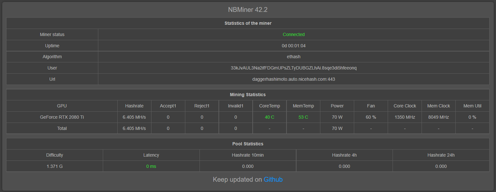

Use Salad in your command line with NBMiner
Made by Angaros#1263 - Last update 03/05/2021 @23:06 UTC+2
Running CLI allows you to:
- Mine on GPU and CPU at the same time
- Most GPUs supported (from 3GB to any+)
- Temperature control
- Potentially earn a bit more
I'm in the process of making a video guide for NBMiner. Stay tuned!
Join my Discord server for extra help!
The following content is not official, but has been approved. It is not being monitored by Salad. The use of the following is at your own risk, and we will not be held liable for any damage, loss of information, or any issue whatsoever.
We cannot and will not pay you back in any event.
Wondering why this is here? It's because I'm a sole user outside of Salad that made this. Like in a childrens' playground, where they say you have to use it at your own risk, it isn't because it is made to hurt kids, but rather because we can't afford to be held liable for damage.
- Internet Connection
- A GPU with 3GB+ of VRAM
- 500MB disk space
- Have installed Salad and mined once (that's how you get the logs, so the Rig and wallet ID)
You'll first want to install NBMiner, found here. This will install NBMiner with the dependencies and required files.
Here is a guide to finding your Salad logs. You'll need these to find the required IDs.
It should look something like this:


You'll want to keep these for when we do the linking
Go in the NBMiner folder you installed in Step 1. You should find multiple files named start_{crypto}.bat. You'll want to open any of them with notepad, or a code editor.
Should it not exist, you can also just create one.
We will need to edit the start file, by adding the correct information:
@echo off
nbminer.exe -<algo> -o <pool>:<port> -u <walletAddress>.<rigId>
pause
First, the algo:
- If you're on a 3GB - 4GB VRAM GPU, choose
-a beamv3 - If you're on a 4GB+ VRAM GPU, choose
-a ethash
Second, the pool and port: You'll want to use one of these two:
- If you have a 3GB - 4GB VRAM GPU:
stratum+tcp://beamv3.eu.nicehash.com:3387(You can change locations: eu, usa, eu-west, eu-north, usa-west, usa-east) - If you have a 4GB+ VRAM GPU:
ethproxy+tcp://eu1.ethermine.org:4444(You can change locations: eu1, us1, asia1, eu2, us2, asia2)
Third, the Wallet & Rig IDs: This is pretty straightforward. Add them to the file like shown in the example. You'll need to use the nicehash values for wallet address and rig ID.
Here's an example of a completed 4GB+ VRAM GPU file:
@echo off
nbminer.exe -a ethash -o ethproxy+tcp://eu1.ethermine.org:4444 -u 0x6ff85749ffac2d3a36efa2bc916305433fa93731.p36pcuzwyhvd2fx
pause
NBMiner has an extra way of showing your stats than the CMD window, contrary to many other miners.
If you take a look in the NBMiner folder, you should see a open_web_monitor file.
Double-cliking on this should bring you to a local host website with all of your miner info.
Here's some pretty useful NBMiner commands you can use:
-i: From 0 to 100, changes intensity. Lower means lower usage--temperature-limitSet temperature limit of GPU in Celsius. If it exceeds, stop the GPU for 10 seconds and continue.--feeChange devfee in percentage, [0-5]. Set to '0' to turn off devfee with lower hashrate. Otherwise, devfee = max(set_value, def_value).
There are more to be found here for aditional customization.
Save the start.bat file, close it, and run it. It should work if everything was set up properly.
Wait about 15 minutes (can be a bit more, a bit less) and verify that you are getting accepted shares, and then earning on Salad. If not, something went wrong. Verify you follwed all steps and retry once the issue is fixed.
And there you have it! This should be a quick guide to CLI crypto on your Salad account!
Note: XP and Graph will both work, and this does respect Salad's ToS, so it is not a violation of your contract.